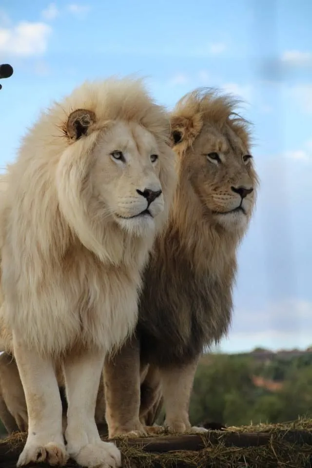

Over the past 50 years, lion research has covered a wide range of interdisciplinary topics involving extensive collaborations with scientists from over a dozen different fields. These collaborations have not only led to greater scientific understanding of disease dynamics, impacts of sport hunting on lion populations, and the interactions of lions and their prey, but also resulted in a large-scale disease-control program in rural Tanzania, new hunting policies in several African countries, widespread adoption of camera-traps as a conservation-management tool, new statistical and economic approaches to broadscale conservation approaches, and innovative local-level conservation interventions.
Lions (Panthera leo) have provided key insights into the ecology of large carnivores, and, as they have become increasingly threatened by human population growth, lions have inspired a wide variety of conservation strategies with wide relevance for protecting other endangered taxa. But compared to other large carnivores, lions were, until recently, reasonably abundant and, compared to their forest-dwelling counterparts, they are easily observed. Thus, the lion has attracted more behavioral, ecological and conservation-related research than any other African carnivore. An essential aspect of this research history is the fact that lions have long been the subjects of interdisciplinary investigations, and this multi-pronged approach has attracted scientists from numerous fields to work with lions and, in many cases, apply their knowledge to other species. Having led the Serengeti Lion Project for nearly 40 years, I have been privileged to participate in much of this work.
The Basics of Lion Biology
When George Schaller started the Serengeti Lion Project in 1966, he relied on binoculars, field notebooks and a Land Rover to observe the lions in their natural habitat. His efforts became the basis of his landmark book, The Serengeti Lion, which won the National Book Award (Schaller, 1972), and, after taking over the project in 1978, Anne Pusey and I initially followed the same path, though by this point, we were interested in testing specific hypotheses about the behavior of this famously sociable species. Brian Bertram, David Bygott, and Jeannette Hanby had maintained detailed data on hundreds of individuals between 1969 and 1978 (Bygott et al., 1979), so we were able to take advantage of 12 years of demographic data to investigate the effects of kinship on cooperation and competition within male coalitions (Packer and Pusey, 1982; Grinnell et al., 1995), dominance and aggressive feeding competition at kills (Packer and Pusey, 1985; Packer et al., 2001), and communal nursing (Pusey and Packer, 1994). In brief, first, while large male coalitions are always composed of close relatives, pairs and trios include non-relatives that cooperate as whole-heartedly as close kin; second, while larger age-sex classes generally dominate smaller ones at kills, within each age-sex class lions follow an “ownership rule” whereby adult females, for example, do not displace other females from feeding sites at the carcass; third, females that give birth within a few months of each other raise their cubs together in a “crèche,” wherein mothers nurse each other's cubs according to the size of their own litter and their kinship to the other females.
As can be seen from the dates of these publications, behavioral research on lions can be extremely time consuming. For example, our non-offspring nursing paper required nearly a dozen years of field work before we could obtain an adequate sample size. Thus, as our initial funding shifted from the Harry Frank Guggenheim Foundation (whose mandate is to explore the relevance of animal behavior to a broad understanding of violence, aggression and dominance) to the National Science Foundation (whose mandate is to support fundamental research in the non-medical fields of science and engineering), we broadened our focus to include a variety of topics in behavior, ecology and evolution—while remaining an overall commitment to conducting basic research for the following 31 years of NSF support.
But starting in 1984, we partnered with geneticists and reproductive physiologists at the National Cancer Institute and Smithsonian Institution to evaluate levels of inbreeding in the small naturally isolated lion population in the nearby Ngorongoro Crater by comparing genetic profiles of these animals with individuals from the large panmictic Serengeti population (O'Brien et al., 1987; Packer et al., 1991a). The Crater lions not only showed lower levels of genetic diversity, but they also displayed many of the same physiological signs of chronic inbreeding as inbred strains of domesticated animals (Wildt et al., 1987; Brown et al., 1991; Munson et al., 1996). Genetic studies have since become common in large carnivores (e.g., Johnson et al., 2010; Hedrick et al., 2014) and have grown greatly in scale, even inferring regional-scale bottlenecks in lion populations caused by persistent persecution over the past two centuries by European settlers (Dures et al., 2019).
As DNA fingerprinting became available in the late 1980s, we were one of the first field projects to assess paternity and kinship coefficients (Gilbert et al., 1991) and to relate these findings to evolutionary theories about cooperation and reproductive skew (Packer et al., 1991b). The resident males in our sample fathered 100% of the cubs conceived during their tenure, and littermates were almost always full siblings. While female lions are egalitarian, with each pridemate enjoying similar reproductive rates as her sisters, daughters, cousins and aunts, male coalition partners suffer increased reproductive disparities with increasing coalition size—and individual males only team up with unrelated partners to form pairs and trios; male quartets and larger are composed entirely of brothers and cousins. Rigorously investigating the genetic structure of social groups soon became common in birds, social insects and primates (Ross, 2008), but we got off to an early start during a time when molecular studies were still extremely costly—thanks to the charismatic appeal of the lion to a well-funded genetics lab at the National Cancer Institute (O'Brien, 2003).
From this large archive of blood samples, we discovered that large felids were infected with feline immunodeficiency virus (FIVPLE, Olmsted et al., 1992), but coupled with our long-term demographic data, we found that lions did not suffer serious illness despite life-long infection with the virus (Brown et al., 1994). These findings inspired parallel research on a similar virus, FIVPCO, in pumas. Experiments with domestic cats have shown that prior exposure with either FIVPLE or FIVPCO is immunoprotective against FIV in domestic cats (VandeWoude et al., 2002).
We used the Tanzanian lion samples to conduct epidemiological studies of the large-scale die-offs in the Serengeti and Ngorongoro Crater in 1994 and 2001 respectively (Roelke-Parker et al., 1996; Packer et al., 1999; Munson et al., 2008). We eventually determined that canine distemper virus (CDV) was part of a diffuse multi-host system and that CDV was only lethal in the lions when co-occurring with high levels of the tick-borne parasite Babesia (Munson et al., 2008). We also used the CDV outbreak as a disease “challenge” to test whether carriers of different strains of FIVPLE experienced different outcomes from exposure to the morbillivirus, and, indeed, individuals infected with the B-clade of FIVPLE suffered higher mortality than carriers of the A or C clades in the Serengeti outbreak (Troyer et al., 2011). Thus, the lions have played a role in the growing study of co-infections and viral communities (Fountain-Jones et al., 2019).
As a direct result of the CDV outbreaks, Sarah Cleaveland, Andy Dobson and I established the “Carnivore Disease Project” with funding from the NSF program in the Ecology of Infectious Diseases. The CDP simultaneously monitored disease status in the Serengeti/Ngorongoro lions and the domestic dogs that live in villages surrounding the Serengeti National Park and within the Ngorongoro Conservation Area. The project has inoculated around 50,000 dogs per year starting in 2002 (Czupryna et al., 2016). The wild dogs (Lycaon pictus) in the Serengeti had suffered from periodic disease outbreaks in the 1960s and rabies was positively diagnosed in 1990 (Gascoyne et al., 1993). But it wasn't until the lion outbreaks that we were able to assemble an interdisciplinary team of veterinarians, ecologists and mathematical modelers to gain the necessary funding to protect endangered wildlife and rural villagers from rabies (Hampson et al., 2009), as well as to reduce the impacts of CDV (Viana et al., 2015). Indeed, the CDP served as a proof-of-concept effort that directly led to even larger-scale dog vaccination programs in low- and middle-income countries in Africa and Asia (Cleaveland and Hampson, 2017).

From Ecology to Conservation Biology
Working deep inside one of the best protected parks in Africa, we had only rarely been confronted with the realities of lion conservation: lions can cause considerable harm to local communities, and people can be quick to retaliate. But around the year 2000, I began to hear reports of lions being killed by local people in the Ngorongoro Conservation Area, at the eastern edge of the long-term Serengeti study area. I asked Dennis Ikanda to survey Maasai communities across the NCA, and he found that lions were being speared both in retaliation for livestock depredation and for ritual purposes (Ikanda and Packer, 2008). Around the same time, Tanzanian National Parks asked me to spend time in Tarangire National Park as lion numbers appeared to be declining across the Maasai Steppe. My graduate student, Bernard Kissui, soon confirmed widespread retaliatory lion killings that likely drove a 25% decline in lion numbers (Kissui, 2008). By the time the Tanzanian Government asked us to investigate the extensive outbreak of man-eating lions between Dar es Salaam and the Mozambique border, it was clear that lions presented enormous threats to human safety and livelihoods all across the country, and the situation was likely similar across Africa, wherever lions still roamed.
The continentwide lion conservation crisis clearly required information from as many populations as possible—and my collaborations initially changed from interdisciplinary to geographical. We needed real data on the current status of lions across all of Africa, we needed to know if population trends were up or down, and we needed to investigate why some populations appeared to be thriving while so many others were in trouble. Loveridge and Canney (2009) had recently developed methods for estimating carrying capacities for lions, based on soils, rainfall and prey abundance, so I assembled survey data from over 40 field biologists to compare the “real” with the “ideal” (Packer et al., 2013). The results fell into two broad categories: lions living inside fenced reserves were always close to the predicted ecological limits, but virtually none of the unfenced reserves were even close to their potential. Most lions reside in unfenced areas, and two key factors predict their population status: first, lions fare best in areas with low human population density—think Namibia, Botswana or other desert countries. Second, lions thrive in parks with management budgets of around $1,000–2,000/km2/year; many reserves in Africa are little more than “paper parks” with budgets of only a few dozen dollars per square kilometer per year.